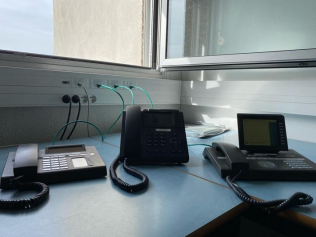

Compétences
Les jauges indiquent le niveau qui est attendu en BUT Réseaux et Télécommunications.
Compétences techniques :
- 90%
- Missions :
- Configuration du point d'accès wifi.
- Activation du routage et du NAT sur le PC1.
- Connexion du PC2 au point d'accès via le wifi.
- Réalisation de pings pour s'assurer de la connectivité des 2 appareils.
- Vérification de l'accès à internet avec le PC2.
- 85%
- Missions :
- Attribution d'adresses IP aux différentes interfaces.
- Création de routes entre plusieurs routeurs.
- Mise en place du protocole de routage RIP.
- 90%
- Missions :
- Découverte d'hyperviseurs tels que VirtualBox et VMWare ESXi.
- Mise en œuvre d'un système de sauvegarde avec l'outil rsync.
- Installation et configuration de l'Active Directory.
- Découverte de la conteneurisation avec Docker.
- 30%
- Missions :
- Observation de l'intérieur du câble Ethernet.
- Mesure de la résistance avec un multimètre.
- Création d'un signal impulsionnel.
- Réalisation du montage.
- Relevé du temps de propagation entre les 2 signaux.
- 40%
- Missions :
- Réalisation de représentations temporelles et fréquentielles.
- Décomposition de signaux en série de Fourier.
- Étude du repliement de spectre.
- Manipulation d'appareils comme un analyseur de spectres.
- Étude de la fonction "FFT" de l'oscilloscope.
- 80%
- Missions :
- Création de sections pour que l'utilisateur puisse naviguer sur la page web.
- Écriture du code HTML pour notamment faire les listes.
- Écriture du CSS.
- 80%
- Missions :
- Découverte de PHP avec les commentaires, les variables, les opérateurs.
- Codage à l'aide de branchements conditionnels (if/else).
- Traitement itératif avec la boucle while.
- Gestion des tableaux.
- 70%
- Missions :
- Études de modèles entité-association.
- Traduction du modèle entité-association en modèle relationnel.
- Requêtes en langage SQL.
-
70%
- Missions :
- Restauration et configuration d'un serveur d'appel.
- Câblage des téléphones avec des switches PoE.
- Configuration des téléphones IP et SIP.
- Configuration des abonnés sur le serveur d'appel.
- Configuration du softphone Xlite.
- Analyse d'un échange téléphonique avec le logiciel Wireshark.
- Configuration du Trunk SIP.
- Configuration du renvoi d'appel et de la messagerie.
- Découverte du logiciel MyPortal.
Réseaux :

Télécommunications :

Programmation :

Téléphonie :
Qualités :
- Adaptabilité :
- Dans la pratique de la pêche, il faut savoir s'adapter aux conditions de pêche qui peuvent être changeantes. Par exemple, si le vent se lève, il peut être nécessaire de changer de leurre ou de technique de lancer.
- Esprit d'équipe :
- Lors de ma pratique du Badminton, j'ai pu faire des matchs en double. J'ai dû faire preuve d'esprit d'équipe afin d'élaborer des stratégies pour déstabiliser les adversaires.
- Persévérance :
- La persévérance est très importante lorsque je fais de la course à pied. En effet, cela me permet de passer outre la douleur physique et mentale et ainsi atteindre mes objectifs.
- Observation :
- L'observation est quelque chose d'essentiel quand je pêche. Par exemple, le fait de voir un poisson sauter en dehors de la surface de l’eau peut indiquer la présence de carnassiers qui chassent, ce qui peut être favorable à la pêche.
Compétences linguistiques :
- Anglais : B1